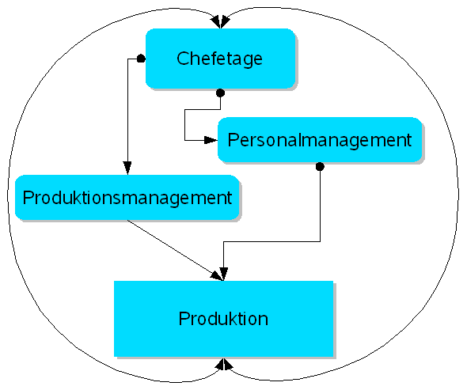
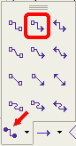
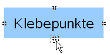

| [zurück] | [Hauptmenü] | [weiter] |
Elemente verbinden - Erstellen eines Organigramms
Abbildung 1: Ein Organigramm
Zur Erstellung von Organigrammen und/oder Flußdiagrammen bietet Draw die "Verbinder" an.
Zunächst erstellen wir die beschrifteten Rechtecke.
-
Klicken Sie auf das Zeichenwerkzeug "gefülltes Rechteck"

- Zeichnen Sie ein Rechteck
- Doppelklicken Sie in dieses Rechteck und beschriften es wie in Abbildung 1
- Nun formatieren wir die Rechtecke
- Wählen Sie nach Rechtsklick auf das Rechteck das Menü "Position und Größe" , Register "Schräg stellen / Eckenradius" Radius "0,20 cm" . Bestätigen Sie mit OK
- Auf der Symbolleiste "Linie und Füllung" wählen Sie aus dem Dropdown-Menü Linienstil "Unsichtbar"
- Klicken Sie in der gleichen Symbolleiste auf das Symbol Schatten
-
Klicken Sie in der Symbolleiste "Zeichnen" auf den Pfeil neben dem Werkzeug "Verbinder"
Abbildung 2: die verschiedenen Zeichenwerkzeuge "Verbinder" - Der Cursor nimmt die Form des angeklickten Verbinders an
- Bewegen Sie die Maus zu dem ersten Objekt, welches verbunden werden soll
-
Ein Rahmen um das Objekt beginnt zu pulsieren und die Klebepunkte werden angezeigt
 Abbildung 3: Klebepunkte - Klicken Sie mit der linken Maustaste auf einen dieser Klebepunkte und ziehen Sie die Maus, bei gedrückt gehaltener Taste, zum zweiten Objekt, mit dem das erste verbunden werden soll
- Die Verbinder passen sich an vorhandene Objekte an und umfliessen diese
- Mit einem Klick auf die Verbinder erscheinen Anfasser, die es ermöglichen die Verbinder zu ändern